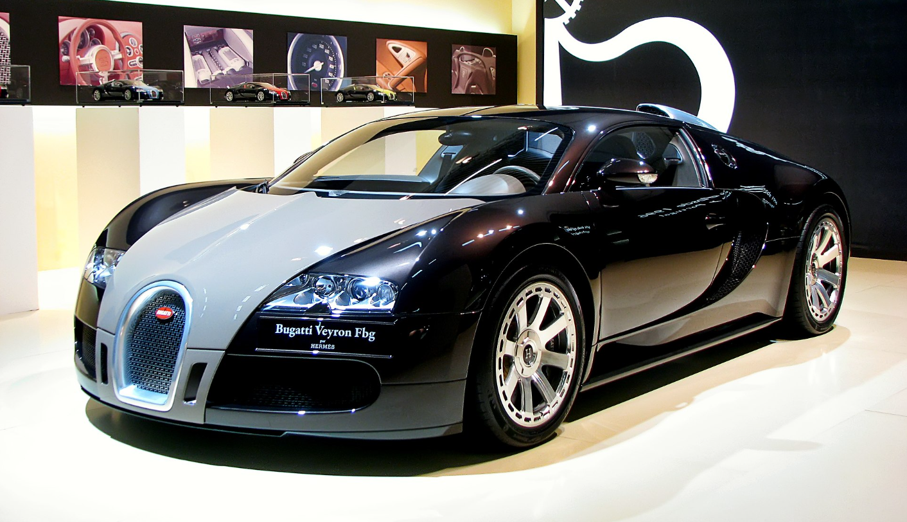

Bugatti Veyron — სუპერ სპორტული ავტომანქანა. წარმოადგენს ყველაზე სწრაფ საგზაო ავტომობილს, რომლის სიჩქარე უტოლდება 431.07 კმ/სთ.[1] მანქანის თავდაპირველ ვერსიას აქვს 407.12 კმ/სთ მაქსიმალური სიჩქარე.[2] ისტორია ეტორე ბუგატი დაიბადა მილანში, 1881 წლის 15 სექტემბერს. მისი მამა კარლო ბუგატი იყო ცნობილი მოქანდაკე, რომლის ნამუშევრები არაბული ზეგავლენით გამოირჩეოდა და დიდი პოპულარობით სარგებლობდა იტალიაში და მის ფარგლებს გარეთ. მილანის ხელოვნების აკადემიის დამთავრების შემდეგ ახალგაზრდა ბუგატიმ მუშაობა დაიწყო კომოპანიაში Prinetti and stucci, რომელიც ველოსიპედებს აწარმოებდა. ის მაშინათვე დაინტერესდა ტრანსპორტის წარმოების ტექნოლოგიით, რომელიც ახალი გამოგონილი იყო და ჩვიდმეტი წლის ასაკში პირველმა დაუმატა ჩვეულებრივ სამთვლიან ველოსიპედს ძრავი, საუკუნის ბოლოს კი აქტიურად იღებდა მონაწილეობას რბოლებში თავისი შექმნილი ავომობილებით.
 back